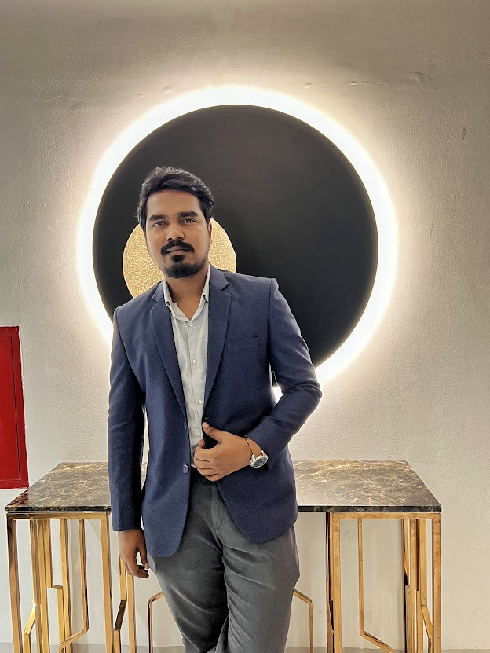
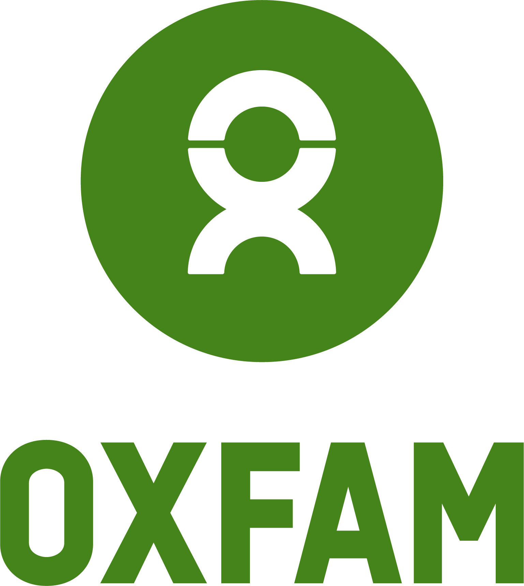
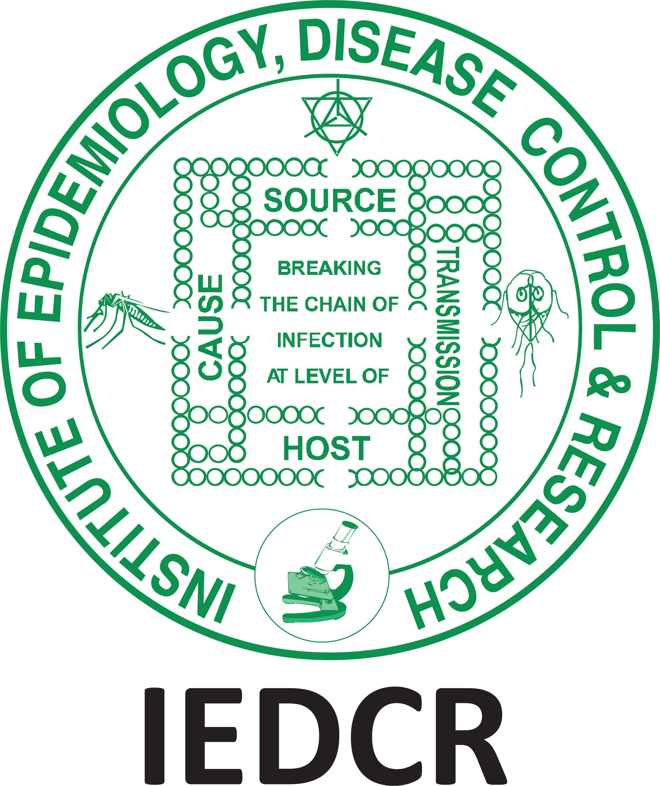

I started by supporting the technology people use every day. Eight years later, my work spans field IT, information systems and public-health data. This is the story of how those pieces came together.

Sanjoy Kumar Sarkar
Bangladesh 8 years of experience Open to international roles
I studied Computer Science and Engineering at Jawaharlal Nehru Technological University in India, from 2014 to 2018. In October 2018, I began my professional journey in ICT infrastructure at Save the Children Bangladesh.
The common thread since then? Understanding the people behind a technical problem—and making the systems they use more dependable.
Save the ChildrenAssistant Officer – ICT Infrastructure Administration
Oct 2018 – Oct 2021
It started with keeping people connected.
My first professional chapter was enterprise ICT. At Save the Children, I supported the networks, applications and devices that colleagues relied on across the Country Office and Field Offices.
This gave me a practical foundation in infrastructure, troubleshooting and user support—the work behind a dependable day at the office.
Supported LAN/WAN connectivity, Microsoft-based environments, enterprise applications and end-user devices.
Troubleshot hardware, software and access issues; supported endpoint deployment and infrastructure maintenance.
Worked in environments serving approximately 200+ HQ users, 500+ field users and 100+ users in Cox’s Bazar.
ICT infrastructureUser supportLAN/WAN
↳ Next, that foundation moved into the field.

Oxfam BangladeshInformation Technology Officer
Oct 2021 – Aug 2023
Then, responsibility became more hands-on.
At Oxfam, I took on independent field IT responsibilities across Cox’s Bazar and Teknaf. I was a primary IT resource for connectivity, endpoints and user systems, coordinating with wider IT teams and vendors.
The work expanded from resolving individual issues to helping maintain continuity across field operations, with clear communication and follow-through.
Served as a primary IT resource for field operations, supporting networks, connectivity, endpoints and user systems.
Resolved hardware, software and account incidents and supported collaboration platforms in a demanding field environment.
Coordinated vendors and IT procurement, trained staff and supported reliable technology use for programme delivery.
Field operationsNetworkingEnterprise support
↳ From supporting the workplace to improving its information systems.
Winrock InternationalIT & Admin Officer
Sep 2023 – Mar 2025
The focus grew from IT to information.
At Winrock, I managed day-to-day IT while supporting web-based MIS, dashboards and reporting automation. The role connected technical services with programme requirements, implementation and staff adoption.
I worked with users and technical service providers to translate operational needs into practical systems, while continuing to support Microsoft 365, office connectivity and devices.
Managed day-to-day IT services, Microsoft 365 support, office connectivity, accounts and devices.
Coordinated implementation and support of web-based MIS, dashboards and reporting automation, translating programme needs into practical systems.
Coordinated technology procurement and vendors; supported staff training, collaboration tools and adoption across operational teams.
Microsoft 365MISVendor coordination
↳ That systems perspective found a new setting in public health.

IEDCRIT Officer – Data & MIS
Mar 2025 – Jun 2026
Connecting the dots in public health.
At IEDCR, I worked with the data workflows and application services behind climate-informed disease surveillance. My responsibilities connected PostgreSQL, recurring disease and climate updates, Python components and Linux operations.
Within the wider EWARS team, I maintained parts of the data-to-dashboard chain, investigated operational problems and contributed to research on early warning and public-health action.
Maintained PostgreSQL-backed dengue and malaria datasets, database upserts and ERA5-derived climate updates for surveillance and forecasting workflows.
Operated Linux application services using Docker, Nginx and systemd; diagnosed an external dashboard-access issue and restored reachability after correcting access/network configuration.
Contributed to EWARS development alongside the wider team, documented technical work and helped surveillance users resolve operational issues.
Digital healthPostgreSQLLinuxPython
↳ Now, I’m building on that experience through AI and data engineering.
From keeping teams connected to keeping surveillance data moving. These case studies show my contribution, the approach I took and what each experience reinforced.
IT operations · Networking · MIS · User training · Technical documentation · Vendor coordination
05 / SHARED KNOWLEDGE
Research & contributions
From practice to shared knowledge.
Working with surveillance systems also brought me into collaborative research. These contributions connect the operational side of early warning with questions about forecasts, alerts and public-health action.
2026Latest contribution
Evaluating the Linkage Between Disease Forecasts, Alerts, and Public Health Action in Bangladesh’s Climate-Informed Early Warning System
My most recent role at IEDCR brought infrastructure, application operations and data workflows into the same picture. I’m now looking to bring that combined experience to a new team.
Currently studying
Professional Master’s in AI & Data Engineering
University of Dhaka · Ongoing
Developing deeper foundations in AI, machine learning, statistics and data engineering.
WHAT I’M LOOKING FORWARD TO
A broader contribution. A new team to learn with.
I’m interested in roles where I can combine dependable IT operations with better digital systems—and continue growing technically.
Looking for someone who understands both the systems and the people using them? I’m open to roles, consulting and collaborations in Bangladesh and internationally.